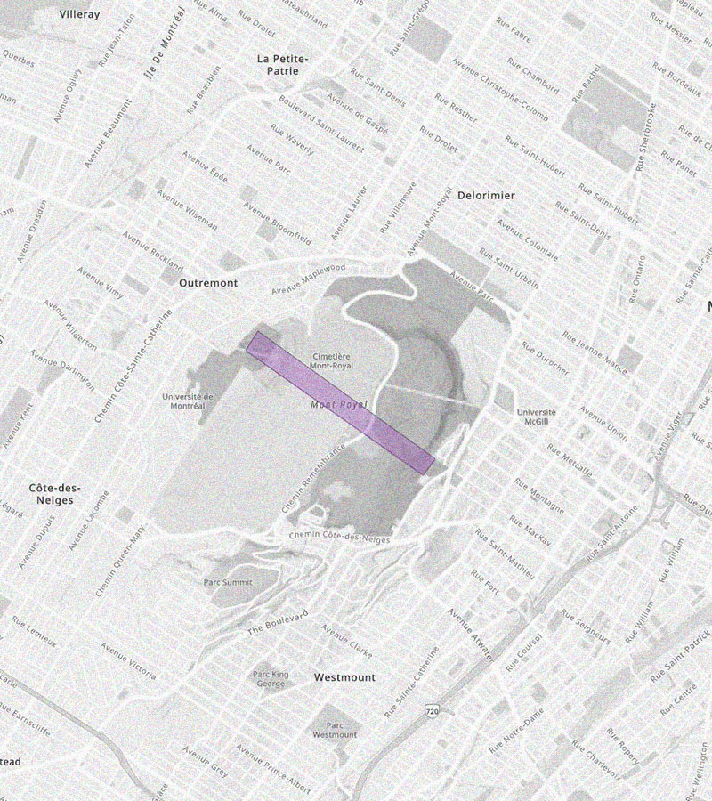
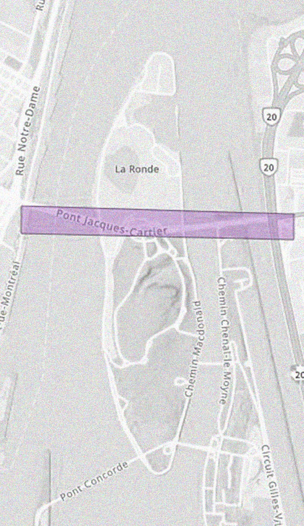

MAPPING ARCHIVES:
MOHAWK LAND DISPOSESSION
BY SULPICIAN PRIESTS
CARTOGRAPHIER LES ARCHIVES : DÉPOSSESSION DE LA TERRE MOHAWK PAR LES PRÊTRES SULPICIENS
Visualize how the Mohawk of Kanehsatà:ke were dispossessed of their land parcel by parcel, to make way for expanding colonial settlement
Visualiser comment les Mohawks de Kanehsatà:ke ont été dépossédés de leurs terres, parcelle par parcelle, au profit du colonialisme d'implantation.
| 540km2 | 1830 | 200 | 2% |
|
Indigenous land granted to the Sulpicians
Terres autochtones octroyées aux Sulpiciens
|
Parcels distributed to Settlers
Parcelles attribuées aux colons
|
Years of dispossession
Années de dépossession
|
Land Remains for Kanehsatà:ke
Territoire ancestral restant
|
GRANTED
Search the data by
Rechercher les données par
Years
Années
-
Sulpician Priests
Sulpiciens
Sold or Conceded to
Vendue ou concédée à
Registration Number
Numero d'enregistrement
With original deed of sale
Première conceession
An address on this territory
Une adresse sur ce territoire
Address not found
Adresse non trouvée
Address is not in study area.
Le lieu n'est pas situé dans la zone d'étude.
à votre demande.
INTRODUCTION
Copyright : © Bibliothèque et Archives Canada
Source : Bibliothèque et Archives Canada, no. d’acquisition 1933-188-1, C-000182
Droit d'auteur : © Bibliothèque et Archives Canada
Source : Bibliothèque et Archives Canada, no. d’acquisition 1933-188-1, C-000182
Albumen print, 10.2 x 6.4 cm, Jean Tangua Collection
Tirage sur papier albuminé, 10,2 x 6,4 cm, Collection Jean Tanguay.
Map showing Kanehsatà:ke as “Indian Village” James Peachy, 1793. Copyright: © Library and Archives Canada.
Carte sur laquelle figure Kanehsatake comme "Indian Village" James Peachy, 1793. Copyright: © Library and Archives Canada.
HOW WAS CONTRACTUALLY PROMISED LAND TAKEN FROM THE MOHAWK OF KANEHSATÀ:KE?
COMMENT LES MOHAWKS DE KANEHSATÀ:KE ONT-ILS ÉTÉ DÉPOSSÉDÉS DES TERRES QUI LEUR AVAIENT ÉTÉ PROMISES PAR LE CONTRAT DU WAMPUM ?
THE SCALE OF DISPOSESSION
L'ECHELLE DE DEPOSSESSION
|  |  |  |
|
THE WIDTH OF MONT-ROYAL
LA LARGEUR DU
MONT-ROYAL |
THE LENGTH OF
THE
JACQUES-CARTIER BRIDGE LA LONGUEUR DU
PONT JACQUES-CARTIER |
HALF OF
CENTRAL PARK LA MOITIÉ DE
CENTRAL PARK |
THE RHYTHM OF DISPOSESSION
|
|
The first phase of settlement was from 1780 to 1809 (with a notable peak
around 1790). Most of the settlers were French farmers. They established their homes
in
the
fertile regions around côte St-Joseph, côte de la Baie, and les Eblouis, gradually
expanding
northward. These areas are collectively referred to as "la mouvance,". During this
time,
the
Sulpicians collected feudal taxes known as "cens and rentes" based on their claimed
ownership of
the land.
La première phase de colonisation s'est déroulée de 1780 à 1809 (avec un pic notable
vers 1790). La plupart des colons sont des agriculteurs français. Ils s'installent
dans les régions fertiles de la côte St-Joseph, de la côte de la Baie et des
Eblouis, puis s'étendent progressivement vers le nord. Ces régions sont appelées
collectivement "la mouvance". À cette époque, les Sulpiciens perçoivent des impôts
féodaux appelés "cens et rentes" en vertu de la propriété qu'ils revendiquent sur
les terres.
|
|
|
The second phase of settlement was short but intense. 28,000 acres
of land granted in
just
10 years, from 1820 to 1829. That is equivalent to 21,200 football fields or
slightly
larger
than the entire present-day municipality of Oka. This significant increase in land
allocation aligns with the Sulpicians' implementation of the British monarchy's plan
to
bring British settlers to the Seigneurie du Lac-des-Deux-Montagnes. These British
settlers
established their homes in the northwestern part of the seigneury. The North River
("La
Rivière-du-Nord") served as a natural buffer between the British and French
settlements.
La deuxième phase de colonisation a été brève, mais intense. En seulement 10 ans, de
1820 à 1829, 28000 acres de terres ont été concédées. Pour donner une idée plus
concrète, cela équivaut à environ 21200 terrains de football ou à une superficie
légèrement supérieure à celle de l'actuelle municipalité d'Oka. Cette importante
augmentation des concessions de terres correspond à la mise en œuvre du projet des
Sulpiciens, en accord avec la monarchie britannique, visant à attirer des colons
britanniques dans la Seigneurie du Lac-des-Deux-Montagnes. Ces colons britanniques
s'installent dans la partie nord-ouest de la seigneurie. La Rivière-du-Nord sert de
tampon naturel entre les établissements français et britanniques.
|
|
|
The third phase of settlement occurred between 1860 and 1889, marking the end of the
seignorial regime in 1858. During this period, the lots granted were the first
instances
of
legal land sales in the Seigneurie. Settlers could either purchase new lots and gain
full
ownership of the land or buy the lots they had been leasing. The increase in acres
granted
during this time could also be attributed to the significant number of Algonquin
families
who were removed from Kanehsatà:ke to Miniwaki between 1858 and 1870, and
Kanehsatakeró:non
families who were relocating to Gibson in 1881, freeing up more land for settlement.
La troisième phase de colonisation se déroule entre 1860 et 1889, marquant la fin du
régime seigneurial en 1858. Au cours de cette période, les parcelles concédées
marquent les premiers cas de vente de terres au sein de la Seigneurie. Les colons
avaient la possibilité soit d'acheter de nouvelles terres et d'en obtenir la pleine
propriété, soit d'acquérir les terres dont ils avaient été les concessionnaires.
L'augmentation du nombre d'acres attribués au cours de cette période peut également
être attribuée à l'importante relocalisation des familles algonquines de
Kanehsatà:ke à Miniwaki entre 1858 et 1870, ainsi qu'au déplacement des familles de
Kanehsatakeró:non à Gibson en 1881, libérant ainsi davantage de terres pour la
colonisation.
|
HOW MUCH PROFIT WAS GENERATED?
QUEL EST LE MONTANT DES BÉNÉFICES RÉALISÉS ?

Grants
Octroyées
In 1733, Governor Beauharnois enlarges the grant by 40%.
In total the sulpicians were given 540km2 of Indigenous land.
An untold number of Canadians will come to "own" these lands.
En 1733, le gouverneur Beauharnois élargit la concession de 40%.
Au total, les Sulpiciens reçoivent 540km2 de terres Mohawk.
Un nombre incalculable de Candaiens deviendront "propriétaires" de ces terres.
Those taxes are called le champart, les banalités, les droits casuels, les cens et rentes.
From 1790 to 1824, the Sulpicians make roughly $4,396,361
(290,027 livres)
by collecting these taxes.
Ces taxes s'appellent le champart, les banalités, les droits casuels, les cens et rentes.
De 1790 à 1824, les Sulpiciens ont en caissé environ 4 396 361$
(290,027 livres)
en collectant ces taxes.
In total, the settlers paid taxes for 145 years to the Sulpicians to live on the land. The Mohawk of Kanehsatà:ke never received a penny.
Au total, les colons ont payé 145 années de taxes aux Sulpiciens poit vivre sur leurs terres. Les Mohawks of Kanehsatà:ke n'ont pas touché un centime.
Instead of returning these lands to the Mohawk of Kanehsatà:ke, the legislators granted the Sulpicians full possession of these lands.
To make up for the loss of tax income incurred by the end of the seigneurial regime, the government set up the National Comission for the Repurchase of Seigneurial Rents (SNRRS).
In 1935, the SNRRS paid the Sulpicians $1 101 448
($51 845 at the time)for the loss of seigneurial taxes.
Au lieu de rendre ces terres aux Mohawk de Kanehsatà:ke, les législateurs en conférant la pleine posession aux Sulpiciens.
Pour compenser la perte de revenues fonciers engendrée par la fin du régime seigneurial, le gouvernement crée la Syndicat national du rachat des rentes seigneuriales (SNRRS).
En 1935, le SNRRS verse aux Sulpiciens 1 101 448 $
(52 845 $ de l'époque)pour la perte des taxes seigneuriales.